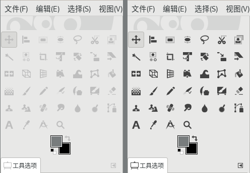

工具箱
GIMP的工具箱提供执行基本任务的工具，您可以用鼠标直接点击即可使用，比如点击矩形选择工具，然后就可以在图像上画一个矩形选区。
在下面我们会逐一介绍每一个工具的功能及其操作方法。
截图1：GIMP工具箱 (版本：2.10.22)
上面的截图，左侧是默认的工具箱样式；取消分组后会变成右边的样式。
取消分组：菜单【编辑⇨首选项⇨界面⇨工具箱➡外观】：取消勾选使用工具组；(让工具箱不使用分组功能)
针对暗黑模式和非暗黑模式界面，应该使用不同的图标主题，分别是菜单【编辑⇨首选项⇨界面⇨图标主题】Symbolic和Symbolic-Inverted 。
提示
请参考下面两个图标主题的对比，界面(编辑⇨首选项⇨界面⇨主题)都选择了System(非暗黑模式)：
 截图2 左侧：Symbolic 右侧：Symbolic-Inverted
更多说明请参考菜单【编辑⇨首选项⇨界面⇨图标主题】。
如果您想显示彩色图标，请点击菜单【编辑⇨首选项⇨界面⇨图标主题】，选择Color。
关于前景色和背景色，活动笔刷、图案和渐变
{kind=link}
{kind=link}
左右两张截图，左侧截图中：
左上的大方块表示前景色(前景色已经被设置为黑色)，右下的大方块为背景色(背景色已经被设置为白色)。
点击右上角的双向箭头图标，可以互换这两个颜色。右击左下角的小黑白方块，可以把前景色重置为默认的黑色，同时把背景色重置为默认的白色。点击前景色可以对前景色进行修改，背景色同理。(更多说明，请参考前景色/背景色工具)
右侧截图中：
在右边多了三个色块，这三个色块分别是活动笔刷、图案和渐变。
如果您在菜单【编辑⇨首选项⇨界面⇨工具箱】中勾选了显示活动笔刷、图案和渐变，就会显示这三个色块，不勾选则会像左侧截图一样，只显示前景色和背景色(GIMP默认不勾选)。
三个色块点击后可以分别修改活动笔刷、图案和渐变。
工具操作说明
下面是工具列表，点击可查看详细说明：
驿窗注：开源软件汉化翻译的精确性
开源软件汉化效果通常取决于译员个人。这里在每个条目后面用斜体标注英文原文，以方便用户理解。
移动工具 Move Tool
 对齐工具 Alignment Tool
对齐工具 Alignment Tool 矩形选择工具 Rectangle Select Tool
矩形选择工具 Rectangle Select Tool椭圆选择工具 Ellipse Select Tool
自由选区工具(套索) Free Select Tool
剪刀选择工具(智能剪刀) Scissors Select Tool
 前景选择工具 Foreground Select Tool
前景选择工具 Foreground Select Tool模糊选择工具(魔术棒) Fuzzy Select Tool
 剪裁工具 Crop Tool
剪裁工具 Crop Tool统一变换工具 Unified Transform Tool
 旋转工具 Rotate Tool
旋转工具 Rotate Tool缩放工具(变形) Scale Tool
切变工具 Shear Tool
翻转工具 Flip Tool
透视工具 Perspective Tool
 3D变换工具 3D Transform Tool
3D变换工具 3D Transform Tool控制柄变换工具 Handle Transform Tool
扭曲变换 Warp Transform
 框架变换 Cage Transform
框架变换 Cage Transform油漆桶填充工具 Bucket Fill Tool
渐变工具 Gradient Tool
 画笔工具 Paintbrush Tool
画笔工具 Paintbrush Tool铅笔工具 Pencil Tool
喷枪工具 Airbrush Tool
墨水工具 Ink Tool
 MyPaint笔刷工具 MyPaint Brush Tool
MyPaint笔刷工具 MyPaint Brush Tool橡皮工具 Eraser Tool
克隆工具 Clone Tool
透视克隆工具 Perspective Clone Tool
修复工具 Healing Tool
 涂抹工具 Smudge Tool
涂抹工具 Smudge Tool 模糊/锐化工具 Blur/Sharpen Tool
模糊/锐化工具 Blur/Sharpen Tool减淡/加深工具 Dodge/Burn Tool
 路径工具 Paths Tool
路径工具 Paths Tool 文字工具 Text Tool
文字工具 Text Tool 颜色拾取工具(滴管) Color Picker Tool
颜色拾取工具(滴管) Color Picker Tool测量工具 Measure Tool
 缩放工具(视图) Zoom Tool
缩放工具(视图) Zoom Tool 前景色/背景色工具 Foreground/Background Color
前景色/背景色工具 Foreground/Background Color GEGL操作 GEGL Operation
GEGL操作 GEGL Operation
{kind=link}
{kind=link}
{kind=link}
{kind=link}
{kind=link}
{kind=link}
{kind=link}
{kind=link}
{kind=link}
{kind=link}
{kind=link}
{kind=link}
{kind=link}
{kind=link}
{kind=link}
{kind=link}
{kind=link}
{kind=link}
{kind=link}
{kind=link}
{kind=link}
{kind=link}
{kind=link}
{kind=link}
驿窗注：工具分类
GIMP把工具箱中的工具分为四个类别；这个分类没有特别的实际意义，仅有助于归纳使用。在菜单工具中，是按如下方式进行分组的：
选择类工具
矩形选择工具
椭圆选择工具
自由选区工具(套索)
模糊选择工具(魔术棒)
剪刀选择工具(智能剪刀)
前景选择工具
按颜色选择工具
绘画类工具
油漆桶填充工具
渐变工具
画笔工具
铅笔工具
喷枪工具
墨水工具
MyPaint笔刷工具
橡皮工具
克隆工具
透视克隆工具
修复工具
涂抹工具
模糊/锐化工具
减淡/加深工具
变换类工具
移动工具
对齐工具
剪裁工具
统一变换工具
旋转工具
缩放工具(变形)
切变工具
翻转工具
透视工具
3D变换工具
控制柄变换工具
扭曲变换工具
框架变换工具
其它类工具
路径工具
文字工具
颜色拾取工具(滴管)
测量工具
缩放工具(视图)
GEGL操作工具( 此工具默认未在工具箱中显示 )